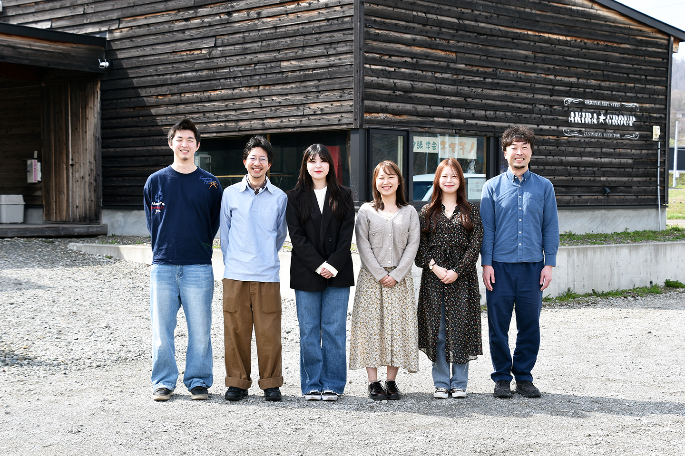
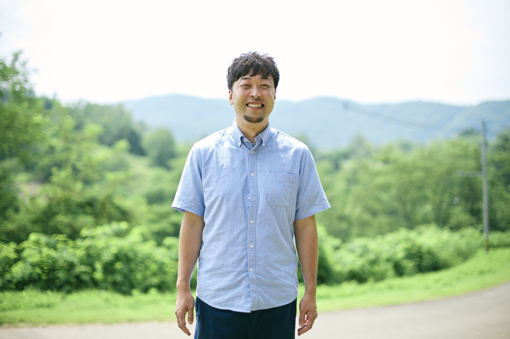

| 会社名 | 株式会社KITAICHI（キタイチ） |
|---|---|
| 代表者 | 代表 佐近 航（さこん わたる） |
| 事業内容 | まちづくり・地域創生に関する事業のサポート／クラウドファンディングの企画・運営伴走 |
| 主な強み | CAMPFIRE パートナー企業。元自治体職員・元ふるさと納税サイト運営者・ファンドレイザーが在籍 |
| お問い合わせ | 担当：佐近 航 メール：info@kita1.jp |
高校生が主体的に地域のために挑戦し、町内外から応援を集めて実現する経験は、生徒の成長にも地域の未来にも大きな意義があります。 「やりたいけれど予算がない」というハードルを、企画から支援獲得までの伴走で乗り越えます。提供内容は次の2つです。
生徒の「地域のためにやりたいこと」を、企画づくりから支援の獲得まで伴走し、実現まで導きます。（例：花火大会・地域イベント 等）
年間を通じた探究の伴走のほか、1回〜数回の授業でクラウドファンディングを解説することも可能。予算に応じ柔軟に対応します。
元自治体職員・元サイト運営者・ファンドレイザーが、ページ制作・返礼品設計・プロモーションを支援。
企画から終了までスケジュールを管理し、できる限り負担のかからない運営を実現。
密に連絡を取り、生徒を一人にしないモチベーション面まで最後まで寄り添います。
※サポート内容・料金は予算等に合わせて柔軟にご相談に応じます（別途サイト手数料）。契約先は学校・保護者会等の任意団体でも対応可能です。
※基本はオンライン対応。交通費のご負担で対面授業にも参加いたします。